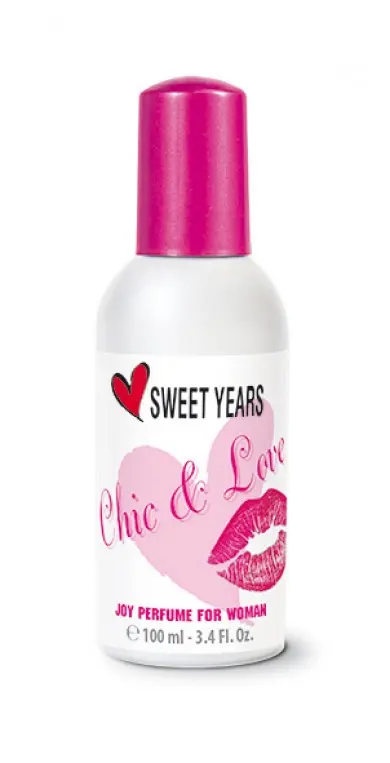
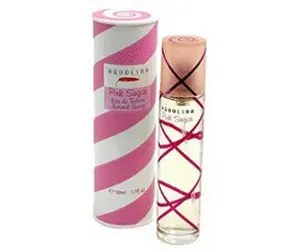
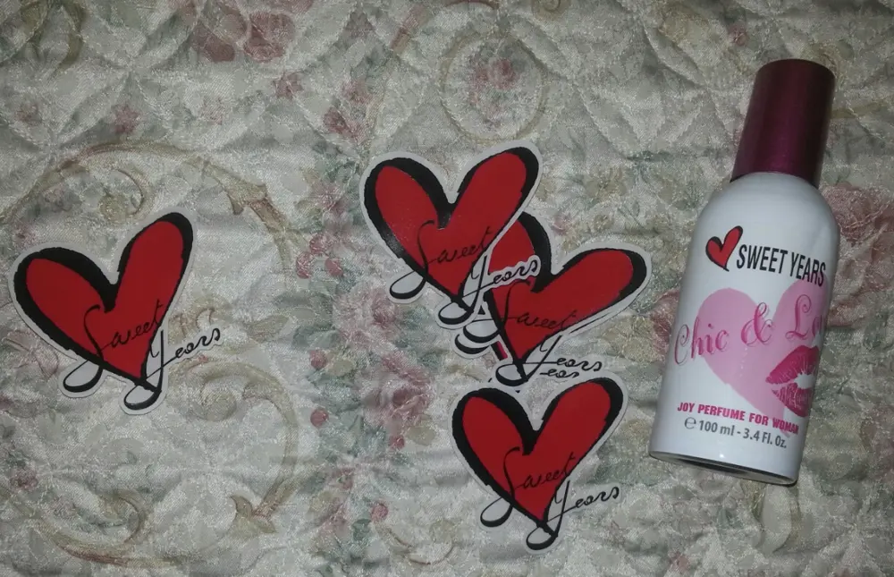

Profumo sweet years chicelove
Hello amiche
Oggi voglio parlarvi di una marca che molti di voi conosceranno. .
Un brand che ormai è sul mercato da anni e che si espande in più categorie, ovvero vestiti, orologi, oggettistica e profumi. .
Ed è proprio di quest'ultimo che voglio parlarvi. . il profumo. .
L'ho vinto ad un concorso su Facebook e proprio poche ore mi è stato consegnato. .
Si tratta di Sweet Years Chic&Love. .

Si presenta così. .In una boccettina in bianca e rosa. . Il flacone è di 100 mlLa fragranza a primo impatto mi ha dato subito l'impressione dell'aquolina - zucchero filato Cioè questo per chi non lo conoscesse:

Ho avuto modo di provare questo bel profumo dell'aquolina e mi piace molto. .
Non pensavo che potesse esistere un profumo simile e invece come possiamo notare c'è :D

Profumo decisamente intenso di zucchero filato. . Molto dolce. .Mi fa venire in mente una fresca giornata di primavera. . Appena fatta una doccia, belle radiose e profumate per uscire ^_^Ecco, un profumo così dolce è così che io lo uso. .in giornate fresche e soleggiate. .
E voi? Avete provato uno di questi due profumi? Ditemi la vostra. .